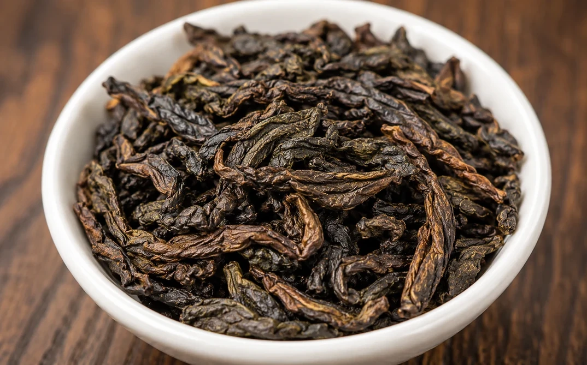
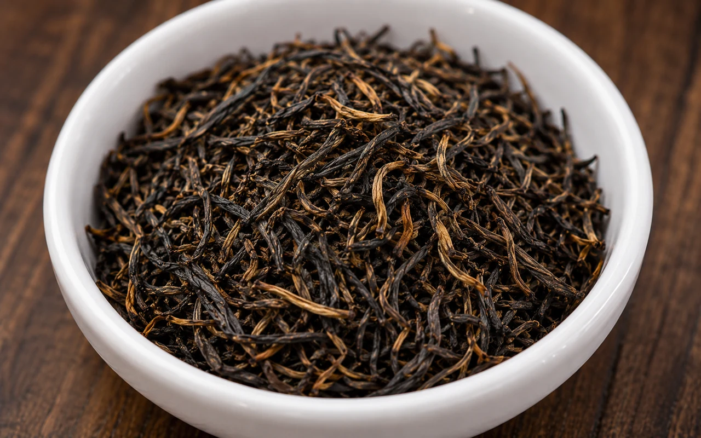
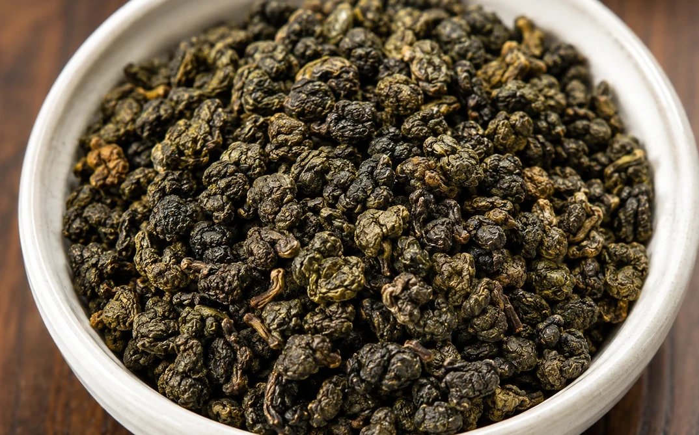
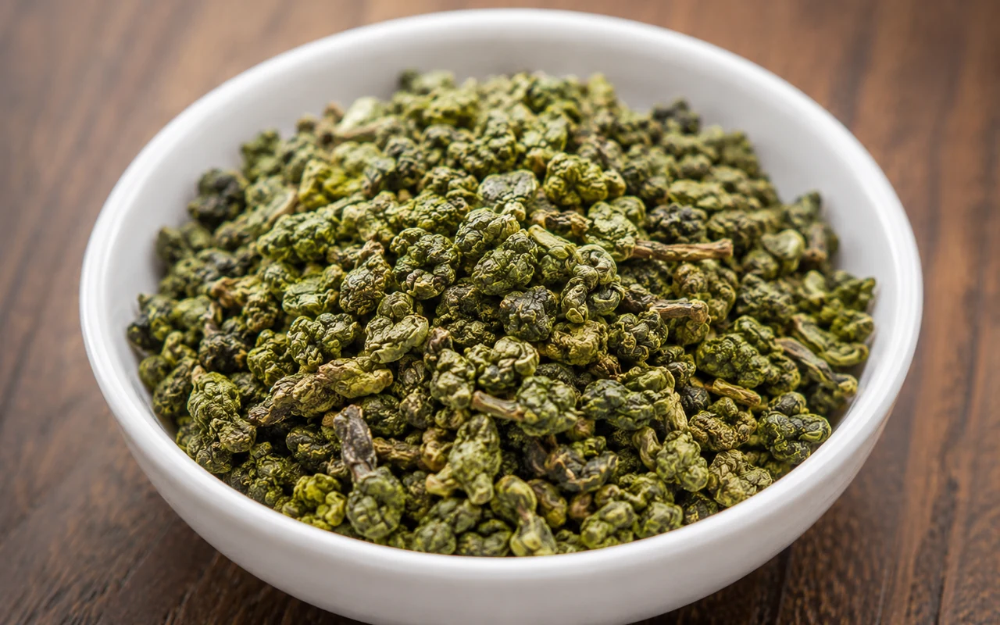
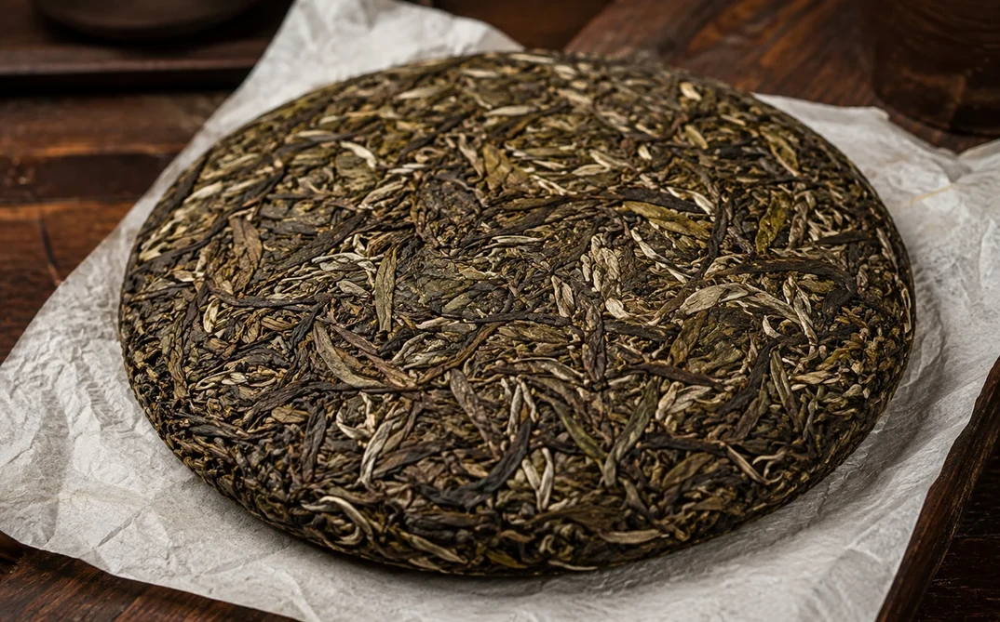
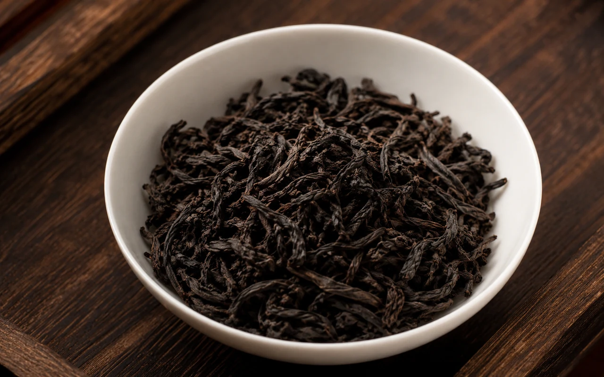
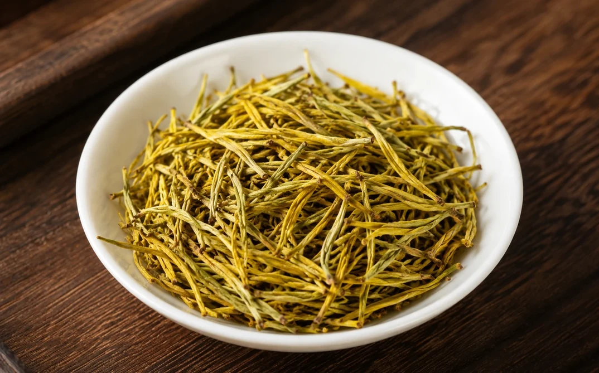
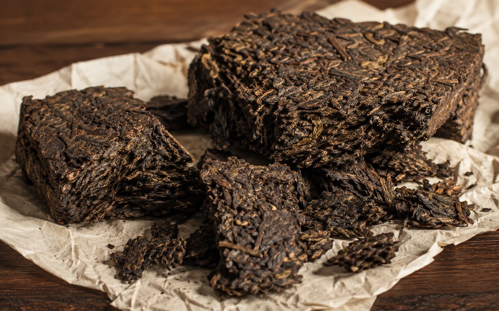

{kind=link}
Как выбрать китайский чай
С чего начать новичку и как описать мастеру вкусы, которые уже нравятся.
Материал в подготовке
Я Бао Завари · Кирова, 94
Китайский чай, церемонии с мастером и живые встречи без снобизма. Можно просто зайти, выбрать вкус и провести время в своём ритме.
Новичкам рады так же, как тем, кто давно пьёт китайский чай.
Первый визит
Можно зайти без церемонии. Выберите напиток из меню и проведите время в своём ритме. В первый раз - нормально. Разбираться в сортах заранее не нужно.
Формат визита
Без сложного выбора на входе: можно прийти на чай, сесть за церемонию или встретиться вдвоём и небольшой компанией.
Китайский чай
Для первого знакомства достаточно описать вкус, который вам ближе. Ниже - несколько направлений из чайного меню.

5 позиций
Перейти
3 позиции
Перейти
4 позиции
Перейти5 позиций
Перейти
2 позиции
Перейти
6 позиций
Перейти
3 позиции
Перейти
1 позиция
Перейти
1 позиция
Перейти7 позиций
Перейти7 позиций
Перейти7 позиций
ПерейтиЧайная церемония
Не нужно заранее знать сорта и правила. Мастер помогает выбрать чай и объясняет процесс по ходу встречи.
Для первого знакомства, встречи вдвоём или небольшой компании.
Можно отталкиваться от знакомых вкусов и ароматов.
Мастер заваривает чай и ведёт церемонию без лекционного тона.
Для первого визита
Не нужно отличать Шэн от Шу и вспоминать названия посуды. В начале достаточно сказать, что вы обычно любите по вкусу.

Пространство
Тёмное дерево, детали чайного стола, живое общение и китайский андеграунд. Здесь одинаково уместны первый визит и привычная встреча за чаем.
Кировка
Я Бао Завари находится на улице Кирова, 94. Можно зайти во время прогулки по центру или приехать специально на чайную церемонию.
Перед production-запуском нужно унифицировать адрес в карточках: в проекте и 2ГИС указан Кирова, 94, в Яндекс Картах ранее отображался 94А.
Полезно
Это направления будущего блога из SEO-архитектуры. В этой версии они показаны как контентные карточки, без публикации пустых страниц.
Перед первым визитом
Пять вопросов, которые полезнее отдельной страницы FAQ.
Нет. Можно начать с привычных вкусов и попросить мастера помочь с выбором.
Да. На главной мы отдельно показываем обычный визит и чайную церемонию как разные сценарии.
Мастер помогает выбрать чай, заваривает его за чайным столом и объясняет процесс по ходу встречи.
Да, но точный формат и доступное количество гостей лучше уточнить при бронировании.
В проекте предусмотрен каталог чая. Актуальное наличие конкретных позиций нужно подтягивать из источника данных.
Кирова, 94
Оставьте заявку, чтобы уточнить свободное время и формат встречи. Для маршрута используйте официальные карточки на картах.